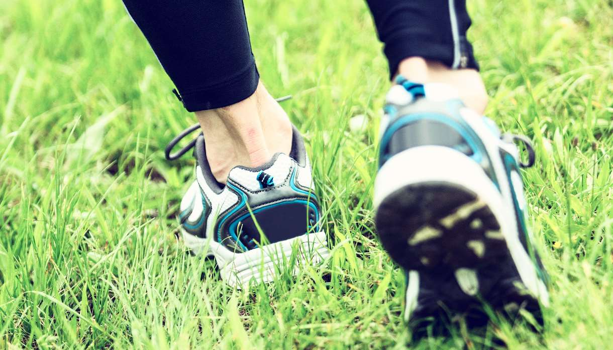

Un petit pas pour vous, un grand pas pour notre planète
Sommaire
Sections:
Présentation du site
Le Campus Vert vous offre des alternatives saines et éco-responsables pour votre vie universitaire au campus La Doua. Explorez l'entièreté de nos fonctionnalités et découvrez une meilleure manière de vous déplacer autour de votre université. N'hésitez pas à nous faire un retour sur votre expérience utilisateur.
Notre mission
| Informer | Proposer | Sensibiliser |
|---|---|---|
| Sur des moyens plus responsables | De meilleures solutions de déplacement | Sur l’usage de moyens alternatifs |
Pourquoi adopter une approche éco-responsable ?
Grâce aux différentes pistes traversant le campus, vous gagnerez sans doute en efficacité en terme de temps de déplacement !
L'utilisation de transports doux améliore votre bien être et votre condition sportive. Partez en cours en bonne humeur !
Et l'environnement? Adoptez un mode de vie durable et responsable. Réduisons la pollution atmosphérique et sonore de notre campus !